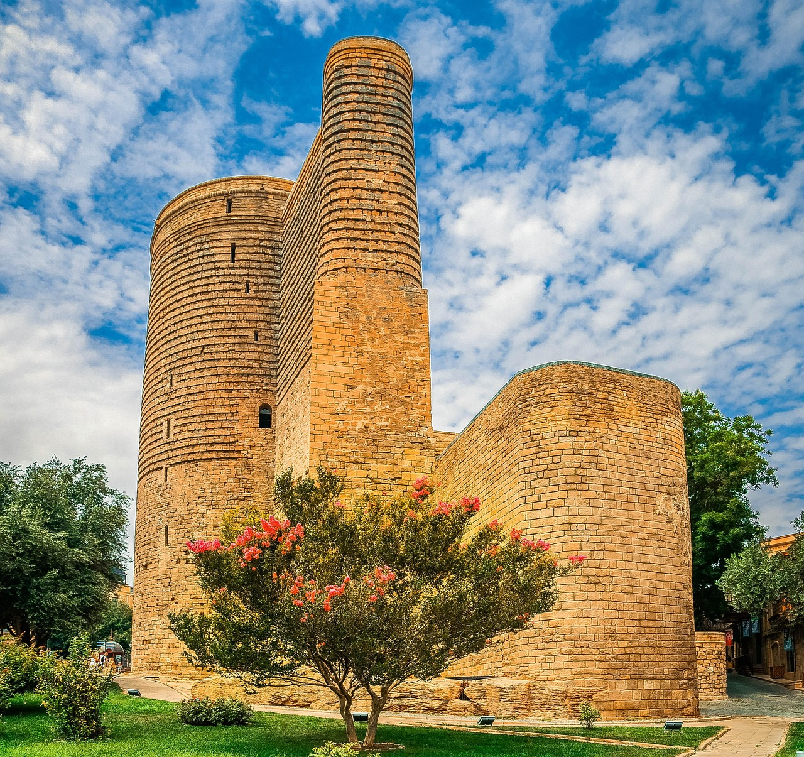

|  |
The Maiden Tower (Azerbaijani: Qız qalası) is a 12th-century monument in the Old City, Baku, Azerbaijan. Along with the Shirvanshahs' Palace, dated to the 15th century, it forms a group of historic monuments listed in 2001 under the UNESCO World Heritage List of Historical Monuments as cultural property, Category III. It is one of Azerbaijan's most distinctive national emblems, and is thus featured on Azerbaijani currency notes and official letterheads. The Maiden Tower houses a museum, which presents the story of the historic evolution of Baku city. It also has a gift shop. The view from the roof takes in the alleys and minarets of the Old City, the Baku Boulevard, the Isa bek Hajinski House and a wide vista of the Baku Bay. The Tower is surrounded by legends rooted in the history and culture of Azerbaijan.[3] [4] Some epics became a subject for scenarios for ballets and theatre's plays. The ballet Maiden Tower is a piece of the Azerbaijani ballet created by composer Afrasiyab Badalbeyli in 1940; a remake of the ballet was performed in 1999. |